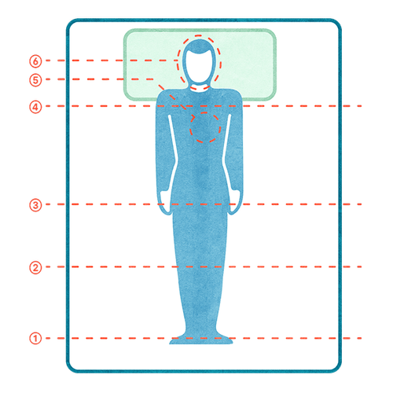

Mit der Academy erhaltet ihr im Business-Plan praxisnahe Lernmodule rund um Facilitation und wirksame Transformation.
Gemeinsam mit 9 Spaces zeigt Plan International Deutschland, wie wertebasiertes Arbeiten Orientierung gibt – nach innen wie nach außen.

Diese Achtsamkeitsmethode stammt aus der MBSR und hilft dabei, mehr Gelassenheit, Körpergefühl und innere Ruhe zu entwickeln.
Ein Tool, das dir dabei hilft, dein Selbstmitgefühl zu stärken und konstruktiv mit Fehlern umzugehen.
Ein Tool, mit dem du reflektieren kannst, welche Bedürfnisse bei dir gerade (nicht) erfüllt sind.
Für das eigene Wohlbefinden kann es sinnvoll sein, eine Liste mit Ereignissen zu führen, auf die man positiv zurückblickt.